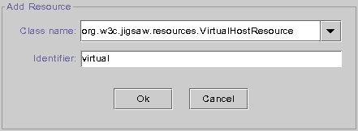
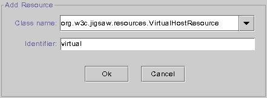
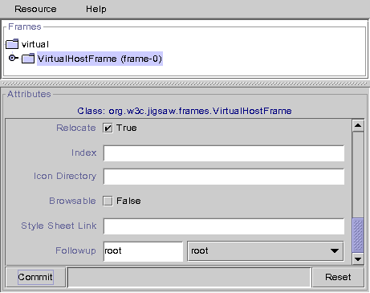

Running Jigsaw with virtual hosting involves the following steps:
1) Open a JigAdmin window (see JigAdmin
documentation)
2) Create the virtual resource.
- Select the "Root" node.
- Select "Add Resource" in the popup menu (right click).
- Type the name of the virtual resource in the Identifier field (ie
"virtual").
- Select the "org.w3c.tools.resources.VirtualHostResource"
class.
- Click on the "Ok" button.
 

3) Attach a VirtualHostFrame to the new "virtual" resource.
- Select "Edit Resource" in the popup menu.
- In the resource editor, Select "Add Frame" in the popup
menu.
- Select the "org.w3c.jigsaw.frames.VirtualHostFrame"
class.
- Click on the "Ok" button.


4) Modify the VirtualHostFrame attributes. See the VirtualHostFrame
reference
page that describe these attributes. Type the old root resource name (ie
"root") in the "Followup" field. Don't forget to commit your changes by
clicking on the "Commit" button.

5) Add you virtual host. You can add as many virtual host as you
want, but in this example we will add only one virtual host that will be a
PassDirectory (see here for
more details).
- Select the "virtual" node.
- Select "Add Resource" in the popup menu.
- Type the name of the virtual host with the port number in the
"Identifier" field (ie www.example.org:8001)
- Select the "org.w3c.tools.resources.PassDirectory"
class.
- Click on the "OK" button.

6) Configure your virtual host.
- Expand the "virtual" node.
- Select the child node "www.example.org:8001".
- Select "Edit Resource" in the popup menu.
- Select the "www.example.org:8001" node in the resource editor tree.
- Type, in the "pass-target" field, the path of the directory (ie
/home/Jigsaw/Jigsaw/WWW2) that will be the root directory of your virtual
host.
- Commit your changes by clicking on the "Commit" button.
7) Add a HTTPFrame to your new PassDirectory.
- Select the "www.example.org:8001" node (in the resource editor)
- Seect "Add Frame" in the popup menu.
- Select the "org.w3c.jigsaw.frames.HTTPFrame" class.
- Click on the "Ok" button.

8) Edit the general properties. Set the "Root Name" property to
"virtual" and click on the "Commit" button.

9) Save the configuration, Jigsaw has a new virtual host! Now
incoming request for www.example.org on port 8001 will be on the
/virtual/www.example.org:8001 resources, the others requests will be
dispatched to the "root" resource.